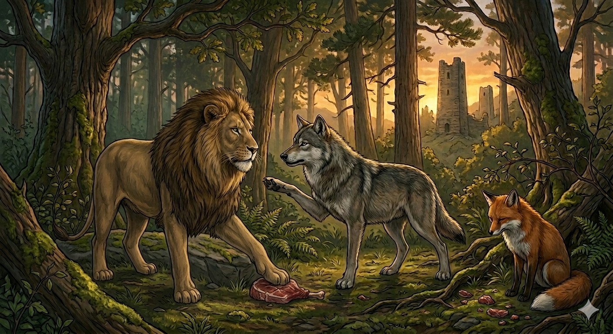

И.А. Дахкильгов. Хьехаме дувцарш - поучительные рассказы-притчи.
И.А. Дахкильгов. Хьехаме дувцарш - поучительные рассказы-притчи. Из ингушского фольклора.

Ломо берзага аьннар
Цхьанахьа наха докъаде хьалъэллачара дулх дихьад цогало. Дедда из додаш, бордз тӀанийсаеннай цунна. Цогал делхашшехьа, цунгара дулх дӀа а даьккха, гӀадъяха йодаш хиннай бордз. Циггач лом тӀанийсаденнад. Берзагара дулх дӀадаьккхад цо. Бордз кадай: - Лом, хох паччахь лоархӀар оаха. Харцдар хӀана ду Ӏа? Согара дулх дӀа хӀана даьккхад Ӏа? Бокъо йий Ӏа лелаер? - Се паччахь хиларца, нийсо лелае дезаш да со. Аз лелаер бокъо а я, харца хӀама а дац. Цогалгара дулх хӀана даьккхадар Ӏа? Цунгара а из доаккхаш, хьона ха доагӀар хьона тарра хьогара а из цхьанне доаккхарг хилар, - аьннад ломо.
РУССКИЙ
Лев сказал волку
Где-то на солнце люди вялили мясо. Лиса ухитрилась его унести. Бежала она с мясом по лесу и нежданно наткнулась на волка. Он отобрал мясо. Лиса села причитать, а волк радостно побежал далее. Но вдруг перед ним вырос лев. Он отобрал мясо. Волк возмутился: - Лев, мы почитаем тебя нашим царем, а ты поступаешь несправедливо! Почему отбираешь у меня мясо? Разве это по закону? - Будучи вашим царем, я обязан блюсти закон. Я и поступил по закону, и по праву. Почему ты отобрал добычу лисы? Когда ты отбирал мясо, то должен был знать, что подобным же образом могут отнять его и у тебя. Ты получил по заслугам, - ответил лев.
ENGLISH
The lion said to the wolf
Somewhere out in the sunshine, people were drying meat. The fox managed to steal some of it. She ran through the forest with the meat and suddenly came across a wolf. He snatched the meat from her. The fox sat down and began to wail, whilst the wolf ran joyfully on his way. But suddenly a lion appeared before him. He took the meat from the wolf. The wolf protested: 'Lion, we regard you as our king, yet you are acting unjustly! Why are you taking the meat from me? Is that in accordance with the law?' 'As your king, I am bound to uphold the law. I have acted in accordance with the law and in all fairness. Why did you take the fox's prey? When you took the meat, you must have known that it could be taken from you in the same way. You got what you deserved,' replied the lion.
НОХЧИЙН
ПОГОВОРКИ
Берза ехача бато цогал доакъош де Ӏомадаьд. Разбитая морда волка научила лису добычу делить. The wolf's broken snout taught the fox how to divide the catch fairly. Барзо йохийначу бато цхьогал дакъош дан Ӏамийна.Берзах ведда гаьн тӀа ваьннав, гаьн тӀа ягӀаш ча хиннай. Испугался волка и забрался на дерево, а там – медведь сидит. Fleeing the wolf, he climbed a tree — and found a bear sitting there. Барзах ведда диттан тӀе ваьлла, диттан тӀехь йехаш ча хилла.Икко къаръяьй нахьара маьчи. Сапог обошел чувяк. The boot got ahead of the old slipper. Эткано къарйина неӀаран мача.Йийначо йиай пхьагал. Зайца ест тот, кто его убьет. The hare belongs to the one who kills it. Йийначо йиъна пхьагал.Кхыча жӀале багара тӀехк яьккха деннача жӀале ший багара тӀехк ежай. Собака, бросившаяся отнимать кость у другой (собаки), обронила свою. The dog that lunged to snatch a bone from another dog dropped its own bone in the process. Кхечу жӀаьлан багара даьӀахк йаккха доллучу жӀаьлан шен багара даьӀахк йоьжна.Къуно къуна къоал дича, Далла велавеннав, йоах. Бог рассмеялся, когда вор обворовал вора. They say God Dyala laughed when one thief robbed another thief. Къуно къуна къол дича, Далла велавелла, боху.Наха дукъа-оарц эгаду, шийна дукъ деттийт. Другим грозится дышлом, а взамен получает удары ярмом. He threatens others with the shaft, but gets struck back with the yoke. Нахан дукъан-Ӏарч лестайо, шена дукъ доьттуйту.Наьха багара яьккхача сискалах вузаргвац. Хлебом, вырванным из чужого рта, не насытишься. You cannot be filled by bread torn from another's mouth. Нехан багара йаьккхинчу сискалах вузур вац.Харца леладу хӀамеи гоама бетта пенни бӀарга шаьра гу. Криво сложенная стена и неправедные дела очень хорошо видны. A crooked wall and unjust deeds are both very easy to see. Харца леладо хӀумий гома боьттина пенний бӀаьрган шера го.Хье бордз яле, катоха, еце – сатоха. Если ты волк, хватай (налетай), если нет – терпи. If you're a wolf, attack; if not, be patient. Хьо борз велахь, тоха; ца велахь, собаре 1а.Цогало яьхад: “ДикагӀдар да – жӀалена ше галехьа, жӀали шийна гар”. Лиса сказала: “Самое лучшее увидеть собаку прежде, чем она увидит тебя”. The fox said: "The best thing is to see the dog before it sees you." Цхьоьгало аьлла: «Дикаг1а долу х1ума ду ж1але шена гарал хьалха ша гар».Ӏайха наьха кий яьккхача, хьайяр тӀаьн кӀала йолла. Сорвал с другого шапку, свою зажми под мышку. If you've snatched another's hat, tuck your own away under your arm. Наха кий яьккхначохь, хьайра йиш куй т1аьн к1ел билла.